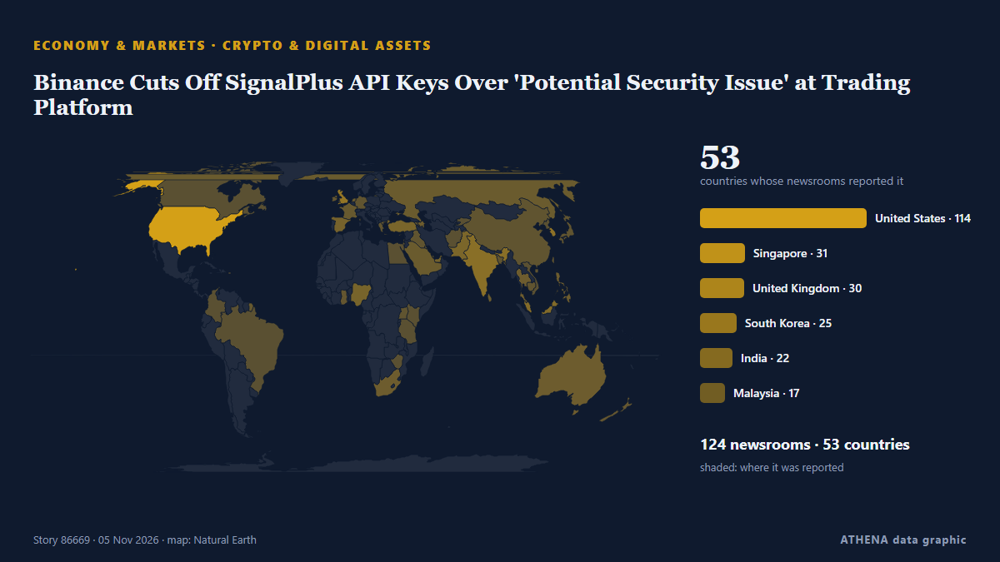

Wirtschaft, Finanzen und Märkte
GesponsertPräsentiert von  Cybernetics and Artificial Intelligence Lab Welcome to the Cybernetics and Artificial Intelligence Laboratory, established at the Department of Business Administration of the National and Kapodistrian University of Athens. The lab is headed by Professor Dimitrios Thomakos. The lab aims to do research that can be published in top venues. Our research uses tools and methods of Artificial Intelligence, and lies in the following areas: - Forecasting - Decision making - Cyber security - Finance We are always looking forward to collaborating with exceptional students!
Cybernetics and Artificial Intelligence Lab Welcome to the Cybernetics and Artificial Intelligence Laboratory, established at the Department of Business Administration of the National and Kapodistrian University of Athens. The lab is headed by Professor Dimitrios Thomakos. The lab aims to do research that can be published in top venues. Our research uses tools and methods of Artificial Intelligence, and lies in the following areas: - Forecasting - Decision making - Cyber security - Finance We are always looking forward to collaborating with exceptional students!
Schlagzeilen werden auf Englisch angezeigt, wie veröffentlicht.
Marktmonitor - amtliche Werte
In welche Richtung sich amtliche Marktkennzahlen bewegen - steigend, fallend oder unverändert - mit dem letzten amtlichen Wert und seinem Datum sowie den von ATHENA bestätigten Marktnachrichten. Amtliche Werte, keine Echtzeitkurse.
Energie
| 1 Tag | 1 Woche | 1 Monat | Amtlicher Wert | |
|---|---|---|---|---|
| Brent crude | ▼ | ▼ | ▼ | $107,03/bblAmtliche Daten vom 3. Nov. 2026 |
| WTI crude | ▼ | ▼ | ▲ | $99,64/bblAmtliche Daten vom 3. Nov. 2026 |
| US natural gas (Henry Hub) | ▲ | ▼ | ▼ | $2,63/MMBtuAmtliche Daten vom 3. Nov. 2026 |
| European natural gas (1 Monat · 3 Monate · 12 Monate)(1M · 3M · 12M) | ▲ | ▲ | ▲ | $25,49/MMBtuAmtliche Daten vom 1. Sept. 2026 |
| Coal (Australia) (1 Monat · 3 Monate · 12 Monate)(1M · 3M · 12M) | ▲ | ▲ | ▲ | $153,84/tAmtliche Daten vom 1. Sept. 2026 |
Nahrungsmittel
| 1 Monat | 3 Monate | 12 Monate | Amtlicher Wert | |
|---|---|---|---|---|
| Wheat | ▲ | ▲ | ▲ | $246,85/tAmtliche Daten vom 1. Sept. 2026 |
US-Aktienmärkte
| 1 Tag | 1 Woche | 1 Monat | Amtlicher Wert | |
|---|---|---|---|---|
| S&P 500 | ▲ | ▼ | ▼ | Nur Richtung (Index © Cboe)Amtliche Daten vom 3. Nov. 2026 |
| Nasdaq Composite | ▲ | ▼ | ▼ | Nur Richtung (Index © Cboe)Amtliche Daten vom 4. Nov. 2026 |
Zinsen, Risiko und Dollar
| 1 Tag | 1 Woche | 1 Monat | Amtlicher Wert | |
|---|---|---|---|---|
| US 10-year Treasury yield | ▲ | ▼ | ▼ | 4,95 %Amtliche Daten vom 3. Nov. 2026 |
| Market volatility (VIX) | ▼ | ▼ | ▲ | Ungewöhnliche Bewegung Nur Richtung (Index © Cboe)Amtliche Daten vom 4. Nov. 2026 |
| US dollar, broad index | ▬ | ▲ | ▲ | 121,67Amtliche Daten vom 30. Okt. 2026 |
Der Euro gegenüber anderen Währungen
| 1 Tag | 1 Woche | 1 Monat | Amtlicher Wert | |
|---|---|---|---|---|
| EUR/USD | ▼ | ▲ | ▲ | 1,1224 USDAmtliche Daten vom 5. Nov. 2026 |
| EUR/GBP | ▬ | ▼ | ▼ | 0,8339 GBPAmtliche Daten vom 5. Nov. 2026 |
| EUR/CHF | ▬ | ▼ | ▼ | 0,9180 CHFAmtliche Daten vom 5. Nov. 2026 |
| EUR/JPY | ▼ | ▲ | ▲ | 177,85 JPYAmtliche Daten vom 5. Nov. 2026 |
| EUR/CNY | ▼ | ▲ | ▼ | 7,4846 CNYAmtliche Daten vom 5. Nov. 2026 |
| EUR/TRY | ▼ | ▲ | ▲ | 56,173 TRYAmtliche Daten vom 5. Nov. 2026 |
| EUR/NOK | ▲ | ▲ | ▼ | 10,4365 NOKAmtliche Daten vom 5. Nov. 2026 |
Quellen: US Energy Information Administration (Öl, US-Erdgas), IWF (europäisches Erdgas, Kohle, Weizen), US-Finanzministerium und Federal Reserve (10-jährige Rendite, Dollar-Index) Cboe (VIX), S&P Dow Jones Indices (S&P 500) und Nasdaq (Nasdaq Composite), über FRED (Federal Reserve Bank of St. Louis); Euro-Referenzkurse © Europäische Zentralbank. Die Werte sind die letzten amtlichen Zahlen mit Datum, keine Echtzeitkurse. Die Richtungen berechnet ATHENA.
Krypto, ETFs und Aktien in den Nachrichten
- Shares in Musk's SpaceX plunge as tech and AI stocks fall Risiko 5.2 5. Nov.
- Wall Street slumps as sharp tech losses put Nasdaq on course for correction Risiko 4.0 5. Nov.
- $2.3 trillion US stock collapse deepens as Bitcoin crashes to $75k and BoE rate hike sparks global risk unwind Risiko 2.7 5. Nov.
- Nasdaq Composite Drops 3% as AI Chip Stocks Tumble on Worries Democrats Will Restrict the Industry Risiko 5.0 5. Nov.
- Anthropic IPO: Sharesies among eight brokers chosen for Australian retail offer Risiko 0.0 5. Nov.
- U.S. stocks surge following midterm elections, oil plunge Risiko 5.2 5. Nov.
- Democrats to Push Broader Crypto Market Structure Bill After Sweeping US Midterms: Report Risiko 0.0 5. Nov.
- Marvell to buy Lumentum in $115 billion all-stock deal Risiko 0.0 5. Nov.
- Bitcoin Rebounds After Democratic Midterm Sweep, But Crypto Faces Tougher Fight in Washington Risiko 2.1 5. Nov.
- Oil and data centre stocks sink after US midterms Risiko 0.6 5. Nov.

Krypto und digitale AssetsBinance Cuts Off SignalPlus API Keys Over 'Potential Security Issue' at Trading Platform
NEW YORK: Cryptocurrency platform Binance said on Thursday that it had fallen victim to a major hack, resulting in the freezing of more than US$2.5 billion in an effort to prevent the assets from… von New Straits Times
| 23. Okt. | 61 |
|---|---|
| 24. Okt. | 28 |
| 25. Okt. | 29 |
| 26. Okt. | 119 |
| 27. Okt. | 131 |
| 28. Okt. | 128 |
| 29. Okt. | 105 |
| 30. Okt. | 115 |
| 31. Okt. | 27 |
| 1. Nov. | 70 |
| 2. Nov. | 132 |
| 3. Nov. | 118 |
| 4. Nov. | 93 |
| 5. Nov. | 48 |
U.S. stocks surge following midterm elections, oil plunge
The losses track an overnight slide on Wall Street. von The Business Times
Developing countries’ external debt hits record $9.4tn — World Bank
Cost of servicing external debt is preventing developing countries from investing for future Debt owed by developing countries rose to a record $9.4tn (£7tn) last year, with the poorest paying the… von Guardian Business
French bank Credit Mutuel Arkea says €100 million missing after cyberattack
The French bank has not confirmed its alleged involvement in the crypto theft, which ZachXBT said could have resulted in losses exceeding $133 million. von Cointelegraph
Ueno Bank liquidation triggers Paraguay political turmoil and impeachment move against Peña
The accounting black hole at Ueno Bank is wiping out public funds, leaving thousands without access to their deposits and pushing Paraguay into its worst institutional crisis in years. von Euronews English
Gold hits a two-week high as dollar, Treasury yields ease after US midterm elections
US gold futures for December delivery climbed 1.8% to US$4,144.20. von The Business Times
Ukraine’s IMF loan hinges on new EU funding, Brussels warns
Divided EU leaders are scrambling to secure €45 billion in additional funding for Kyiv. von Euractiv
French budget unanimously rejected by lawmakers ahead of nationwide strikes
France's National Assembly has overwhelmingly rejected the government's draft budget for 2027 after MPs from across the political spectrum voted against a heavily amended version of the legislation… von RFI English
EU disburses over 4 billion euros in budget support to Ukraine
The EU's Economy Commissioner Valdis Dombrovskis described the payment as "an investment in Ukraine’s recovery, security and prosperity, and in its future as a member of the European Union." von Kyiv Independent
Bank of England set to hike interest rates to 4% to tackle rising inflation
Rate-setters are widely expected to tighten monetary policy in a bid to tackle rising inflation in the UK economy. von The Irish News (Belfast)
France Industrial Output (MoM) below forecasts (0.3%) in September: Actual (-0.5%)
Pierce Brosnan Endorses Callum Turner As Next James Bond As “He’s So Strong”; Josh O’Connor Reacts To Talk Around 007 Casting
Two names rumored to take on the James Bond role next are Callum Turner and Josh O’Connor, and reactions to the idea of them playing 007 on the big screen are coming in. von Deadline
French blood bank hit in latest cyberattack on fridges
The refrigeration systems were manipulated remotely, causing operating temperatures to rise to very high levels, from -30C to as much as 11C. von Free Malaysia Today
US midterms live: Stocks climb as Democrats take control of Congress
HONG KONG: Asian stocks fell with the dollar Wednesday, with the Democrats enjoying big early gains in the US midterms as they look to take control of both houses of Congress, which analysts said… von New Straits Times
City searching for signals as Bank of England set to hike interest rates
City traders are searching for any signs the Bank of England could move faster in hiking interest rates in the coming months with policymakers widely expected to tighten monetary policy on Thursday . von City A.M.
Eurozone inflation rises to 4% in October
Consumer prices accelerate at fastest pace in three years. von Financial Times - Global economy
Global stocks rebound, dollar and oil fall after Democrats' election victory
Global markets rally as European shares hit two-month highs, US bond yields fall and currencies from Mexico to Canada gain. von TRT World
Tech stocks tumble as US election results fuel AI spending concerns
SK Hynix, Samsung lead losses in Seoul, while oil extends decline and several Asian markets advance. von Anadolu Agency (English)
Seoul shares plunge over 5 pct on AI regulation concerns after U.S. midterms
SEOUL, Nov. 5 (Yonhap) -- South Korean stocks plunged more than 5 percent Thursd... von Yonhap (English)
N. Korea says dialogue with U.S. an option but not a must for national interest
North Korea said Wednesday that dialogue with the United States remains an option for peace, but that it would not be necessary for its own interest while again stressing the U.S.' accusation of its… von The Korea Times
Block Inc. shares rise 6% after-hours as it raises full-year profit forecast
Block raised its full-year gross profit forecast to $12.63 billion, which would represent a 22% year-on-year growth. von The Block
Gold, silver prices surge as US dollar drops after midterm elections
Bullion reclaims $4,000-per-ounce threshold while silver climbs toward $52 amid falling Treasury yields, greenback weakness. von Anadolu Agency (English)
World Bank: How corruption is holding back Kenya’s economic potential
Corruption is costing Kenya more than public money lost through questionable deals. von People Daily
Stocks surge, and the Dow soars 1,500 points as oil prices tumble following the US midterm elections
U.S. stocks soared Wednesday after President Donald Trump's party lost its sole control of Washington in the midterm elections.Stocks. von Mainichi (English)
Israel kills Palestinian in Gaza, seizes eight homes in occupied West Bank
Israeli attacks target several areas of Gaza as Palestinian authorities report new homes and more than 620 acres of land near Ramallah seizures in occupied West Bank. von TRT World
California Billionaire Tax Appears Headed For Failure
California voters are weighing Prop. 40, a one-time billionaire tax that has Silicon Valley executives funding campaigns and weighing their options. von Business Insider
Global markets slide as Democratic gains in US midterms rattle investors
Deutsche Bank notes that Democratic gains in Congress have weighed on US equity futures, particularly technology stocks, amid concerns over tighter AI regulation. von FXStreet
ECB’s Nagel signals December rate hike as inflation risks mount
On Tuesday, the President of the Bundesbank and Governing Council member of the European Central Bank (ECB), Joachim Nagel, said that an ECB rate increase in December “is very likely to be necessary.” von FXStreet
Disney plans thousands of layoffs as managers asked to cut costs by 20%
California: Walt Disney is considering cutting thousands of jobs as the entertainment giant seeks to reduce costs, with some managers asked to identify annual savings of 20 per cent, Bloomberg… von Gulf News
Belgrade Commercial Court Opens Bankruptcy Proceedings Against Alta Banka
The Commercial Court in Belgrade opened bankruptcy proceedings against Alta Bank, appointing the Deposit Insurance Agency as the bankruptcy administra. von N1 Serbia (English)
Consortium led by Boehly preparing securities swap deal for Lukoil assets — Reuters
According to the sources, an unnamed bank acting on behalf of the consortium has purchased frozen Lukoil securities from Western investors to subsequently exchange them for the company’s foreign… von TASS (English)
Gold Falls 0.65% to US$3,922 as US Yields Rise | Gold & Silver, Nov 3
Gold fell 0.65% to US$3,922 an ounce as US yields rose to 4.93% and the dollar firmed. von The Rio Times
North Korea warns of stronger response to US ‘hostility’
The powerful sister of North Korea's leader is warning the United States that it will mount a stronger response to Washington's "invariable hostile policy" toward Pyongyang, the state news agency… von NDTV
Hong Kong Q3 GDP expands by 5.2% year-on-year, outlook positive
Hong Kong’s economy grew by 5.2 per cent year on year in the third quarter, marking its 15th consecutive quarter of expansion, while retail sales rose by 6.4 per cent in September. von South China Morning Post
US stocks: S&P 500 ends down; Apple dips ahead of quarterly report
The major indices closed mixed for the day. von The Business Times